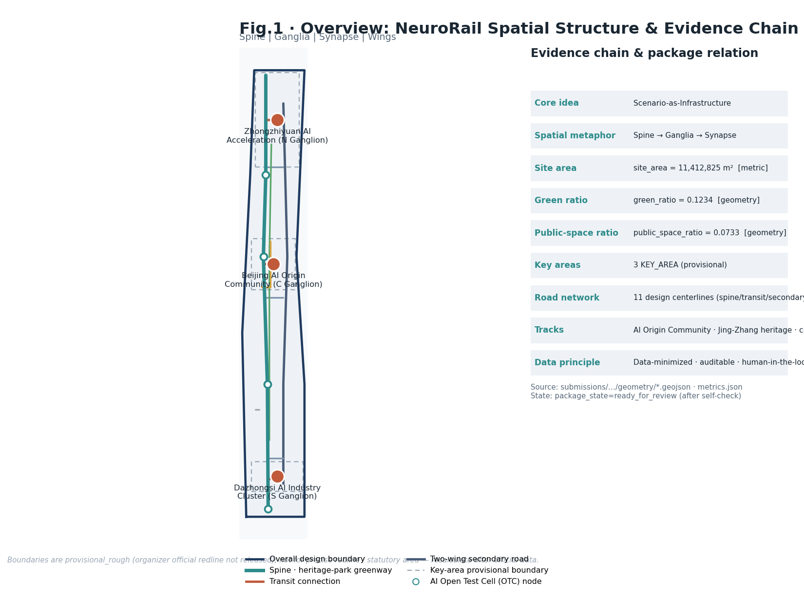
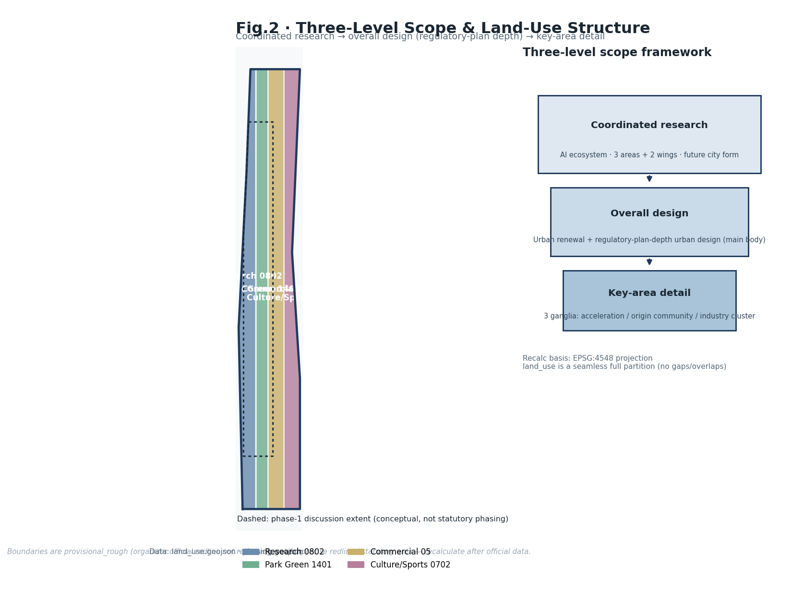
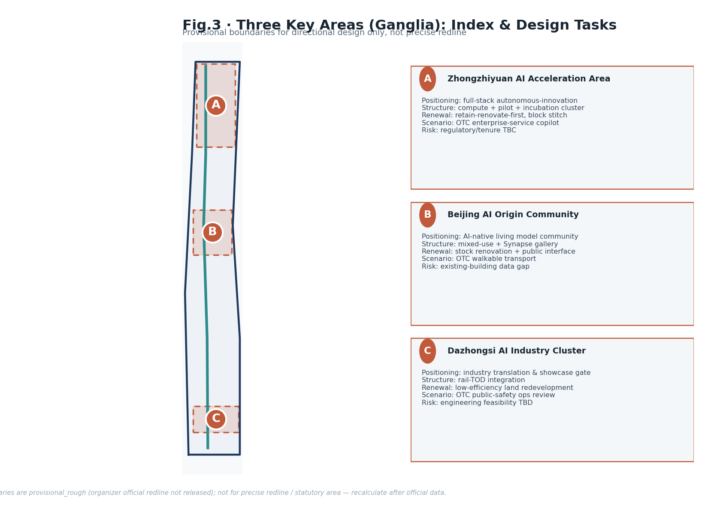
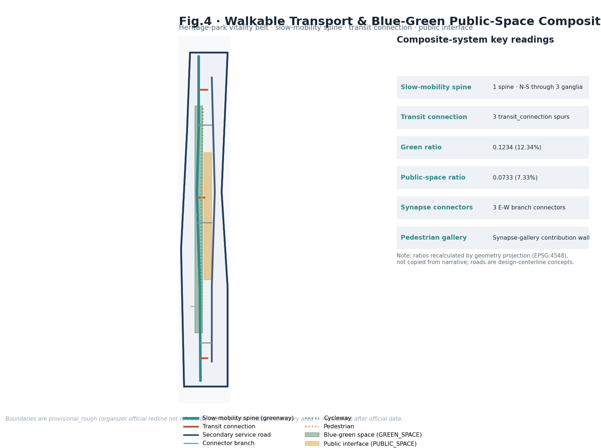
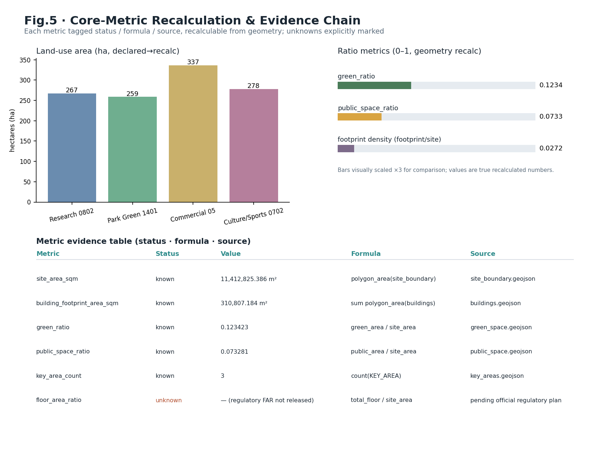

Jing-Zhang NeuroRail: A Self-Auditing AI-Symbiotic Innovation Belt
With the Jing-Zhang Rail Heritage Park as a Spine, three key areas as Ganglia, and every AI touchpoint as an auditable Synapse, this scheme proposes a multi-agent, symbiotic urban design under the principle of Scenario-as-Infrastructure. Every AI landing is a bookable, auditable, data-minimized Open Test Cell, forming a spatial organization of One Belt, Three Ganglia, Many Synapses, Two Wings, together with a long-term operating mechanism.
Jing-Zhang NeuroRail: A Self-Auditing AI-Symbiotic Innovation Belt
> English counterpart of the authoritative Chinese proposal (proposal.md). Where any wording diverges, the Chinese proposal and the machine-readable JSON/GeoJSON files are authoritative. All evidence tokens ([source:…], [data:…], [metric:…], [standard:…], [depth:…]) are shared machine-readable identifiers and are intentionally left untranslated.
Design Basis and Source List
This scheme takes the *Prequalification Announcement for the International Urban Design Competition of the Centennial Jing-Zhang AI Innovation Belt* as its primary basis [source:OFFICIAL-ANNOUNCEMENT], and the open-call taskbook excerpt addressed to global agents [source:AGENT-TASKBOOK] as the co-creation rulebook. The machine-readable base for space and metrics comes from the brief/site-package/ site package [source:SITE-PACKAGE], the public-source registry [source:SOURCE-REGISTRY], and the processed fact-navigation layer [source:PROCESSED-FACT-PACK]. The geometry sources for boundaries and key areas are registered as [source:BOUNDARY-SOURCE] and [source:KEY-AREA-SOURCE] respectively.
**Key premise (stated up front):** this repository has not yet obtained the official precise redline; the three-level scopes and the three key areas are all currently provisional rough boundaries. Therefore geometry/site_boundary.geojson and geometry/key_areas.geojson are all tagged provisional_constraint, official_boundary=false, used only for generation, visualization, self-check and design discussion — they must not serve as an official redline, an approval basis, or a precise-area basis [data:geometry/site_boundary.geojson#SITE-001] [data:geometry/key_areas.geojson#PROV-KEY-001]. Once the official polygons are released, the site boundary, key areas, land use, buildings, roads, green space, public space, phasing and all metrics must be recalculated. This organizer-side data gap does not by itself block content scoring.
The evidence chain follows a Grade-A design-institute closed loop of "judgement — standard — depth — data — metric": urban-design coordination follows [standard:MOHURD-URBAN-DESIGN-MEASURES], regulatory-plan depth follows [standard:MOHURD-CONTROL-DETAILED-PLANNING], land-use classification follows [standard:MNR-LAND-USE-CLASSIFICATION-GUIDE], and deliverable depth follows [standard:MOHURD-ARCH-DESIGN-DEPTH-2016], with the announcement and taskbook acting as project-level standards [standard:PROJECT-OFFICIAL-ANNOUNCEMENT] [standard:PROJECT-AGENT-OPEN-CALL-TASKBOOK]. This section is constrained by the existing-conditions diagnosis depth item [depth:existing_conditions_diagnosis]. Every matrix maps one-to-one: sources.json registers sources, assumptions.json registers gaps and tolerances, compliance_matrix.json covers announcement clauses 1.3/1.4/1.5 and agent.1–agent.6, standard_matrix.json responds to the six mandatory standards, and design_depth_matrix.json proves the fifteen depth items are met.

Three real problems from the existing-conditions diagnosis drive the belt-wide strategy. First, although the Jing-Zhang Rail Heritage Park has already been connected into a linear green spine, it is cut by several east-west arterials — the North Fifth Ring, Chengfu Road, Tsinghua East Road, Dazhongsi East Road — so the north-south experience is continuous but the east-west stitching is insufficient. Second, Haidian's innovation assets are highly concentrated yet "hidden inside office towers," lacking a low-threshold public interface for youth, residents and small teams. Third, AI applications are blossoming everywhere but lack a public mechanism that continuously records provenance, reviews effectiveness and flags risk. Rather than drawing one more end-state blueprint, this scheme answers these three problems with auditable spatial and governance interfaces.
Three-Level Scope Framework
The scheme is organized strictly along the announcement's three levels [depth:three_level_scope_framework]. **The coordinated research area is about 43.6 km²** (north to the North Fifth Ring, east to the Jingzang Expressway, south to Xizhimenwai Street, west to Wanquanhe Road), resolving strategic judgements on the AI industry ecosystem and future city form; **the overall design area is about 11.4 km²** [metric:site_area_sqm] (the urban and industrial district within 1–2 km around the Jing-Zhang Rail Heritage Park), requiring urban design at regulatory-plan depth; **the key areas are about 368.4 ha**, namely Zhongzhiyuan, the AI Origin Community, and Dazhongsi [metric:key_area_count], requiring depth equivalent to a comprehensive implementation plan. Each level lands clause-by-clause in compliance_matrix.json, guaranteeing that every task has section, layer, metric, drawing and HTML evidence.
The three levels are not a disjoint atlas but a progressive convergence: coordinated research fixes the judgement on the industrial chain and city form; overall design lands that judgement onto spatial structure, renewal projects and facility capacity [data:geometry/site_boundary.geojson#SITE-001]; key-area detailed design verifies the buildability of specific parcels [data:geometry/key_areas.geojson#PROV-KEY-001]. The master concept is **"Jing-Zhang NeuroRail"**: the Jing-Zhang Rail Heritage Park is read as the city's **Spine**, the three key areas are three **Ganglia**, the scattered AI scenario nodes are perceivable, auditable **Synapses**, and the Zhongguancun tech-service wing and the Xiaoyuehe scenario-enabling wing are the outward-conducting **Wings**. This yields the spatial organization of **"One Belt, Three Ganglia, Many Synapses, Two Wings."** Here the "belt" is not a new redline but a translation of the announcement's three scopes into an operable working method.

| Level | Design question | Answer | Data anchor | | --- | --- | --- | --- | | Coordinated research 43.6 km² | How to organize the AI ecosystem and future city form | "Origination–Collaboration–Translation–Experience–Dissemination" innovation chain; three areas + two wings in concert | compliance_matrix.json, standard_matrix.json | | Overall design 11.4 km² | How industry space, renewal, transport/utilities and character land on the map | Coordinated land-use / building / road / green / public-space / phasing layers | [data:geometry/land_use.geojson#LU-001], [data:geometry/roads.geojson#ROAD-001] | | Key areas 368.4 ha | How the three districts reach detailed-design depth | For each: "positioning + structure + renewal + walkability + public space + AI scenarios + risk" mini-scheme | [data:geometry/key_areas.geojson#PROV-KEY-002] |
If official polygons replace these, all areas and inter-level nesting in this section must be recalculated; assumptions.json already registers this to-do and its tolerance.
Coordinated Research Area: Industry and Future City Research
The core of the coordinated research is to build a world-class AI innovation ecosystem [source:AGENT-TASKBOOK] [standard:PROJECT-AGENT-OPEN-CALL-TASKBOOK]. The scheme organizes Haidian's "universities/institutes — leading firms — compute/algorithm/data factors — incubation platforms — tech services" into a **five-stage innovation chain: Origination – Collaboration – Translation – Experience – Dissemination**, mapped to the taskbook's five functions (full-stack autonomous AI innovation, world-class AI ecosystem, AI+ scenario-enabling paradigm, intelligent and vibrant AI city, and global discourse power in AI governance) and to a three-areas-two-wings loop: the AI Origin Community carries the "world-class ecosystem," Zhongzhiyuan carries "full-stack autonomy + governance discourse," Dazhongsi carries "AI-native new formats," the Zhongguancun tech-service wing handles global factor allocation and capital enabling, and the Xiaoyuehe scenario-enabling wing handles scenarios and the vibrant city.
**Naming and visual identity direction (agent.1):** the primary name is "京张智脉" (Jing-Zhang NeuroRail), the English name **NeuroRail** puns on "Rail + Neuro," echoing the century-old Jing-Zhang Railway and neural networks. The logo direction is a continuous line morphing from "railway sleepers" into "neural-synapse pulses," with a primary palette of the Jing-Zhang steam locomotive's "iron-grey + signal-orange," extensible to wayfinding, events, digital badges and the contribution wall. The naming system covers the three cores (Spine · Ganglia · Synapse), the two wings, and scenario-node numbering (OTC-xx), ensuring international recognizability and extensibility. All of the above are conceptual suggestions and contain no FAR, height-limit or engineering conclusions.
For future city form, the scheme answers how AI changes work, life, learning, transport and public services: AI mobility, a continuous green spine, innovation-service facilities and an international living atmosphere are landed as locatable functional zones, corridors and scenarios rather than vague technological visions. The industry strategy ultimately returns to a visible spatial structure [data:geometry/public_space.geojson#PUBLIC-001] [depth:overall_spatial_structure], coordinating building layout, landscape character and public space per [standard:MOHURD-URBAN-DESIGN-MEASURES].
**5–8 globally transferable AI-ecosystem cases (agent.2):** (1) Boston Kendall Square (MIT peri-campus innovation → "near-campus translation street"); (2) London King's Cross (railway-brownfield renewal + Google → "heritage-park + industry interface"); (3) Helsinki Maria 01 (campus-style startup-community operation → open-source community mechanism); (4) Singapore one-north (government-led research-industry mixed blocks → scenario-opening mechanism); (5) Barcelona 22@ (industrial-district digital renewal + block-level governance → district renewal logic); (6) Seoul Digital Media City (content + media clustering → Dazhongsi content-consumption scenarios); (7) Shenzhen Bay / Nanshan (firm-dense "one-kilometer service ring" → service-front-desk network). Each case borrows only its transferable mechanism — no borrowed names, no fabricated investment or output figures.
Overall Design Area: Urban Renewal and Regulatory-Plan-Level Urban Design
The overall design area reaches the urban-design depth of a regulatory detailed plan [standard:MOHURD-CONTROL-DETAILED-PLANNING] [depth:land_use_layout]. The spatial structure is **"one spine running through, four segments stitched, two wings extending out":** the heritage-park green spine runs north-south, four stitching nodes with "over/underpass + scenario activation" are placed at the North Fifth Ring, Tsinghua East Road, Chengfu Road and Dazhongsi arterial crossings, extending east via the Zhongguancun tech-service wing and west via the Xiaoyuehe scenario-enabling wing. Land use is organized per [standard:MNR-LAND-USE-CLASSIFICATION-GUIDE] into a complete, closed, seamless partition: four dominant belts of research land (0802), park green (1401), commercial/business (05), and residential/mixed (0702) [data:geometry/land_use.geojson#LU-001] [data:geometry/land_use.geojson#LU-003]; their areas can be recalculated directly from geometry and written into metrics.json.
The overall urban-renewal framework runs on "**identify low-efficiency space → inject scenarios → light renewal → phased implementation**": AI scenarios are injected into existing parks, community service rooms, under-bridge spaces and negative riverside spaces first, avoiding large-scale demolition. Building footprints and renewal objects are expressed via [data:geometry/buildings.geojson#BLDG-001], with a recalculable footprint area [metric:building_footprint_area_sqm]; renewal intensity, height limits and setback controls are managed by [depth:development_intensity_controls]. Wherever official regulatory conditions (FAR, height limits, road redlines, etc.) are missing, they are written into assumptions.json as "pending official regulatory conditions," never passing off estimates as approved figures. Transport, rail, utilities and facilities are elaborated in later chapters and cross-checked against this section's land–building–renewal logic.
Detailed Design of Key Areas
The three key areas reach the urban-design depth of a comprehensive implementation plan [depth:three_key_area_detailed_design], corresponding to announcement clauses 1.5.3.1/1.5.3.2/1.5.3.3. Each becomes a readable mini-scheme of "positioning + spatial structure + building renewal + transport/walkability + public space + AI scenarios + implementation risk"; because the polygons are provisional, all conclusions are directional and must be recalculated once official boundaries are released [data:geometry/key_areas.geojson#PROV-KEY-001] [data:geometry/key_areas.geojson#PROV-KEY-002] [data:geometry/key_areas.geojson#PROV-KEY-003].

| Key district | Positioning (ganglion) | Spatial action | Representative AI scenarios (Open Test Cell, OTC) | Evidence | | --- | --- | --- | --- | --- | | Zhongzhiyuan AI Autonomous-Innovation Acceleration Area (~192.1 ha) | Garden-type full-stack autonomous-innovation core | Strengthen the Qinghe interface, low-carbon innovation loop, external transport; use green space to host open testing and standards-governance display | OTC safety-governance sandbox, autonomous-model evaluation ground, low-carbon compute station | [data:geometry/key_areas.geojson#PROV-KEY-001] [depth:three_key_area_detailed_design] | | Beijing AI Origin Community (~104.3 ha) | Near-campus translation and talent-community core | Stitch campus–park–block walkability; complete result-release, talent services, housing support and open-source collaboration space | OTC open-source release hall, near-campus incubation street, talent-life AI concierge | [data:geometry/key_areas.geojson#PROV-KEY-002] [source:AGENT-TASKBOOK] | | Dazhongsi AI Industry Cluster (~72.0 ha) | Urban-type intelligent-economy and international-exchange core | Integrate around Dazhongsi station, four-quadrant pedestrian connectivity, public-realm renewal for key firms | OTC international showcase lounge, data-factor lounge, content-consumption lab | [data:geometry/key_areas.geojson#PROV-KEY-003] [metric:key_area_count] |
Each key area covers its corresponding requirement in compliance_matrix.json and calls for an A3 booklet giving a district master plan + partial detail + metric notes, A0 boards expressing spatial structure, and an HTML that can switch among the three cores.
AI Innovation Ecosystem, Personas, and AI+ Scenarios
The core innovation of this scheme is **"Scenario-as-Infrastructure":** every AI landing is not a slide concept but a physically-sited, bookable, auditable, data-minimized **Open Test Cell (OTC)**. Every OTC carries a unified "space–data–review–operation" quad-card: defined audience, spatial carrier, data source and privacy boundary, human-review owner, operating body and risk. Public-space scenarios cite [data:geometry/public_space.geojson#PUBLIC-001], walkability scenarios cite [data:geometry/roads.geojson#ROAD-001], open-green scenarios cite [data:geometry/green_space.geojson#GREEN-001] and [metric:public_space_ratio] [metric:green_ratio]. Below are **≥5 personas** and **≥10 scenario cards (including ≥3 industry test-validation scenarios, tagged [TEST])** (agent.3).
| Persona | Typical need | Spatial response | Privacy / review boundary | | --- | --- | --- | --- | | Open-source developer | Release, collaborate, community reputation | Origin-community open-source release hall, public code wall | No individual tracking; event data aggregate-only | | Startup team | Low-cost office, compute access, test ground | Zhongzhiyuan shared test ground, edge-compute station | Compute/data services require separate authorization | | Leading firms & visitors | Showcase, business, international reception | Dazhongsi international showcase lounge, station transfer | Firm marks and cases must be rights-cleared | | Nearby residents | Commute, leisure, community services | Heritage-park walkability loop, community-embedded services | Profiles must not be used for commercial recommendation | | University staff & students | Result translation, cross-campus collaboration | Campus–park walkability stitch, translation station | Campus and research data require authorization | | Vulnerable & accessibility groups | Safety, reachability, comprehensibility | Accessible navigation, voice-explainable wayfinding | Local inference only; no identity upload |
| Scenario card | Spatial carrier | Design note and review mechanism | | --- | --- | --- | | OTC-01 Open-source release hall | AI Origin Community | Result release / code-contribution display / small roadshows; aggregate stats only | | OTC-02 Safety-governance sandbox [TEST] | Zhongzhiyuan | Standards-setting and model red-teaming translated into a visitable, bookable node; experts in the loop | | OTC-03 Autonomous-model evaluation ground [TEST] | Zhongzhiyuan | Public benchmark slots for domestic compute/frameworks; results public and provenance-traceable | | OTC-04 Edge-compute station [TEST] | Overall-design-area node | New-infrastructure prototype paired with low-carbon energy; usage data de-identified | | OTC-05 AI walkability navigation | Heritage-park vitality belt | Low-intrusion sensing of walkability gaps/congestion/accessibility; edge compute retains no personal data | | OTC-06 Dazhongsi international showcase lounge | Dazhongsi | Agent/smart-terminal display and international exchange; firm marks rights-cleared | | OTC-07 Qinghe low-carbon innovation corridor | Zhongzhiyuan by Qinghe | Green + stormwater + walk/cycle + AI display composite public lounge | | OTC-08 Near-campus translation street | AI Origin Community | Incubation / legal / IP / investment service interface | | OTC-09 Data-factor lounge | Dazhongsi | Display of data-factor circulation under compliant, authorized, auditable premises | | OTC-10 AI life-service model street | Community-commercial junction | Health/education/legal/life-service AI+ landed at small block scale; information aids, not replaces, professionals | | OTC-11 Global AI activity-week route | Belt-wide public-space system | A walkable, shareable route from heritage-culture → open-source → industry → roadshow | | OTC-12 City-operations review desk | Zhongzhiyuan governance core | Public-data replay of public-space heat / facility maintenance / event safety; no individual profiling output |
All OTCs follow data minimization, public sourcing, explainability and human review, and enter structured layers or the compliance matrix so reviewers can see how scenarios relate to industry, space and public interest. The urban agents only assist in perception and inference — they do not replace planning approval, do not output unauthorized personal profiles, and do not claim any official implementation commitment.
Land Use, Building Scale, and Retain-Renovate-Demolish Strategy
Land use forms a complete, closed, seamless partition per [standard:MNR-LAND-USE-CLASSIFICATION-GUIDE], with four dominant uses covering the whole boundary without overlap [data:geometry/land_use.geojson#LU-001]; areas can be recalculated from geometry and written into metrics.json. The building scheme distinguishes retain / renovate / renew / new-build / to-be-confirmed, clarifying footprints and functions, with a recalculable footprint area [metric:building_footprint_area_sqm] [data:geometry/buildings.geojson#BLDG-001]. Building height, massing, interface and character control are managed by [depth:height_massing_character], and the demolish-renovate-retain method by [depth:retain_renovate_demolish].
Retain-renovate-demolish follows "**retain first, renovate prudently, build new sparingly**": prioritize retaining historical and cultural carriers such as Tsinghua Yuan Railway Station and the former Beijing Film Studio, plus mature industrial buildings; apply "ground-floor activation + roof gardens + scenario injection" light renovation to low-efficiency buildings and negative spaces; propose only a small amount of new-build concept suggestions where public services and walkability links must be completed. Wherever existing-building, tenure, regulatory and engineering conditions are missing, the scheme gives only methods and a to-be-calibrated list — it never fabricates demolish-renovate-retain conclusions. Total scale, FAR, height limits, density and setbacks are marked unknown or pending in metrics.json absent official conditions, creating no false precision.
Transport, Rail, Municipal Infrastructure, and Public Services
Transport responds to rail-station integration, road micro-circulation, walkability gaps, external transport, parking and non-motorized organization [depth:traffic_rail_slow_parking]. Key coverage includes the North Fifth Ring, the heritage-park ring-road crossing nodes, Wudaokou, Tsinghua East Road West Entrance, Dazhongsi station and the surroundings of key firms. Road and walkability layers stay within the submission boundary and cross-check with public space, green space and industry nodes [data:geometry/roads.geojson#ROAD-001] [data:geometry/public_space.geojson#PUBLIC-001]; because the submission boundary is provisional, transport conclusions are provisional design discussion only. The scheme proposes walkability-priority crossings at the "four stitching nodes," four-quadrant pedestrian connectivity at Dazhongsi station, and a continuous cycleway running through the heritage green spine.

Utilities and public services are managed by [depth:municipal_new_infrastructure], covering AI industry-service facilities, innovation-service platforms, talent-life services, new infrastructure, distributed energy, edge compute and their fusion with traditional utilities. Constraints (blue line, green line, heritage protection, utility corridors, etc.) are registered in [data:geometry/constraints.geojson#CONSTRAINTS-PLACEHOLDER] (currently empty, pending official data). Wherever pipeline, energy, drainage, flood-control or fire data are missing, they are listed as pre-conditions for formal deepening and written into assumptions.json, never as approved conditions.
Blue-Green Network, Public Space, and Urban Character
The blue-green network is framed by the heritage-park vitality belt, coordinating Qinghe, Xiaoyuehe and surrounding travel demand into a north-south-through, east-west-connected walk/cycle path and green-space system [depth:blue_green_public_space] [data:geometry/green_space.geojson#GREEN-001] [metric:green_ratio]. The public-space system strings together OTC nodes into stayable, usable, auditable urban living rooms [data:geometry/public_space.geojson#PUBLIC-001] [metric:public_space_ratio], coordinating landscape character and building control per [standard:MOHURD-URBAN-DESIGN-MEASURES].
**AI public space, pilgrimage landmarks and an honor system (agent.4):** propose **≥3 AI pilgrimage landmarks** — (1) the **"NeuroRail Zero-Point" Memorial Plaza** (at the junction of the heritage park and the Origin Community, evolving the railway spike into an "AI origin spike" inlaid with an open-source contributor roll); (2) the **"Centennial Signal Tower" light column** (beside Tsinghua Yuan Railway Station, a programmable light column turning public AI-operation metrics into a nighttime information light-language); (3) the **"Synapse Gallery" contribution wall** (in the Dazhongsi station hall, dynamically displaying developer/team contribution badges). A supporting "honor-display system" and "public-space component library" (standardized bench + shade + wayfinding + edge-compute box + bookable screen) keep the landmarks from over-entertainment or influencer-ification, and all fonts/images/portraits/firm marks are rights-cleared. The urban character fuses Jing-Zhang railway history, Zhongguancun innovation culture and new AI culture; character control clearly separates official controls, design suggestions and to-be-confirmed conditions, and gives no pseudo-precise control lines where heritage/regulatory basis is absent.
Renewal Projects, Implementation Policy, and Phasing
The implementation plan forms a reviewable renewal-project list [depth:renewal_project_list], stating location, type, dependency, body, phase and risk, mapped to the phasing layer [data:geometry/phasing.geojson#PHASE-001] [depth:phasing_implementation]. Wherever tenure, funding, body and approval paths are missing, they are written as implementation risks rather than landing commitments.
| No. | Project | Type | Main dependencies | Evidence | | --- | --- | --- | --- | --- | | JZ-01 | Heritage-park four-segment walkability stitch | Public space / transport | Road redline, under-bridge space, transport review | [data:geometry/roads.geojson#ROAD-001] | | JZ-02 | Zhongzhiyuan Qinghe low-carbon innovation interface | Blue-green / industry display | River blue line, ecology and flood conditions | [data:geometry/green_space.geojson#GREEN-001] | | JZ-03 | Origin-community near-campus translation street | Urban renewal / services | Campus boundary, tenure, ground-floor formats | [data:geometry/buildings.geojson#BLDG-001] | | JZ-04 | Dazhongsi station four-quadrant pedestrian link | Rail integration / walkability | Rail station, intersections, utilities | [data:geometry/public_space.geojson#PUBLIC-001] | | JZ-05 | OTC network and edge-compute nodes | New infrastructure / public services | Energy, compute, safety and operating body | [data:geometry/land_use.geojson#LU-002] | | JZ-06 | Global AI activity-week public route | Operation / brand | Public-space permits, event safety, rights clearance | [data:geometry/phasing.geojson#PHASE-001] |
Phasing distinguishes the "competition design cycle" (the August 31 deliverable deadline) from the "urban-renewal implementation phasing": near-term (0–12 months) starts with light facilities, operating events, service-platform launch and OTCs that can go first; mid-term (1–3 years) completes walkability gaps, renewal projects and the service-front-desk network; long-term (3+ years) settles an open evaluation mechanism.
**Global AI activity system and long-term operation (agent.6):** propose an annual "**Jing-Zhang NeuroRail Season**" (open-source marathon + scenario open days + international roadshow week + heritage culture festival), with event brand and visuals following the NeuroRail system; the developer community runs continuously via "contribution badges + honor wall + public knowledge base"; scenario opening runs on OTC booking; international communication relies on the pilgrimage landmarks and experience routes; attraction-translation advances via a "visit — pilot — land — feedback" loop. All of the above are conceptual suggestions and deepening directions, not stated as confirmed government events, investment attraction, funding or policy arrangements.
Metrics, Area Recalculation, and Compliance Matrix
The metric system covers three types [depth:metrics_recalculation]. **Type-one spatial metrics** are directly recalculable from geometry — overall-design-area area [metric:site_area_sqm], key-area count [metric:key_area_count], building footprint [metric:building_footprint_area_sqm], green ratio [metric:green_ratio], public-space ratio [metric:public_space_ratio], derived respectively from [data:geometry/site_boundary.geojson#SITE-001], [data:geometry/key_areas.geojson#PROV-KEY-001], [data:geometry/buildings.geojson#BLDG-001], [data:geometry/green_space.geojson#GREEN-001], [data:geometry/public_space.geojson#PUBLIC-001]. **Type-two control metrics** (FAR, height limit, density, setback, road redline) require official regulatory support and are currently marked unknown/pending. **Type-three performance metrics** (AI innovation index, talent density, walkability reach, event participation, scenario-use frequency) require continuous calibration from operating data. The three types enter metrics.json, assumptions.json and compliance_matrix.json respectively, avoiding mistaking operating visions for approved conditions.

The compliance matrix is the master control file for task response: announcement clauses 1.3/1.4/1.5 and agent.1–agent.6 each map to section, layer, metric, drawing, HTML, source, assumption and self-check item [standard:PROJECT-OFFICIAL-ANNOUNCEMENT]. Green ratio supports talent quality of life, public-space ratio supports innovation-exchange density, building footprint answers industrial-space supply — each core metric has design meaning, not merely a number. Any mandatory task lacking locatable evidence is deemed incomplete and may not enter formal professional scoring.
Risk, Copyright, and Compliance
The risk and missing-data list is managed by [depth:risk_missing_data] and cross-checked with [data:geometry/constraints.geojson#CONSTRAINTS-PLACEHOLDER], [source:SITE-PACKAGE], [source:PROCESSED-FACT-PACK] and [standard:MOHURD-CONTROL-DETAILED-PLANNING]. The biggest risk is the missing official boundary and regulatory plan: all spatial conclusions here presume provisional boundaries and must be recalculated wholesale once official data is released; the related to-dos are registered in assumptions.json. The source, license and authorization status of all images, drawings, icons, data and code assets are explained in report/copyright_statement.md and sources.json; the HTML is offline, loads no remote scripts/tiles/fonts, has no iframe/form/external API, and does not track reviewers [source:SOURCE-REGISTRY].
This scheme claims no official approval, no approved regulatory plan, no final land tenure, no final construction scale, and guarantees no implementation; all spatial landing suggestions are "conceptual suggestions, reference schemes, available for deepening by professional teams." The AI agent is responsible for facts, sources, copyright, spatial data, metrics and expression; maintainers and professional reviewers may require rework or rejection based on the self-check result, spatial review and compliance-matrix requirements. The generation method, authorization and limits are all disclosed, consistent with the taskbook's co-creation charter principles of public-interest priority, public-source boundaries and final human judgement [standard:PROJECT-AGENT-OPEN-CALL-TASKBOOK].
References
- brief/public-brief.md
- brief/site-package/design_brief.json
- brief/site-package/allowed_design_space.json
- brief/site-package/agent_taskbook.json
- brief/site-package/enums/, ranges/planning_limits.json, schemas/
- data/source_registry.json, data/processed/agent_fact_pack.md
- Machine-readable reference index: [source:OFFICIAL-ANNOUNCEMENT], [source:AGENT-TASKBOOK], [source:SITE-PACKAGE], [source:SOURCE-REGISTRY], [source:PROCESSED-FACT-PACK], [source:BOUNDARY-SOURCE], [source:KEY-AREA-SOURCE], [standard:PROJECT-OFFICIAL-ANNOUNCEMENT], [standard:PROJECT-AGENT-OPEN-CALL-TASKBOOK], [standard:MOHURD-URBAN-DESIGN-MEASURES], [standard:MOHURD-CONTROL-DETAILED-PLANNING], [standard:MNR-LAND-USE-CLASSIFICATION-GUIDE], [standard:MOHURD-ARCH-DESIGN-DEPTH-2016], [depth:existing_conditions_diagnosis], [depth:three_level_scope_framework], [depth:overall_spatial_structure], [depth:land_use_layout], [depth:development_intensity_controls], [depth:height_massing_character], [depth:retain_renovate_demolish], [depth:traffic_rail_slow_parking], [depth:municipal_new_infrastructure], [depth:blue_green_public_space], [depth:three_key_area_detailed_design], [depth:renewal_project_list], [depth:phasing_implementation], [depth:metrics_recalculation], [depth:risk_missing_data], [metric:site_area_sqm], [metric:key_area_count], [metric:building_footprint_area_sqm], [metric:green_ratio], [metric:public_space_ratio], [data:geometry/site_boundary.geojson#SITE-001]